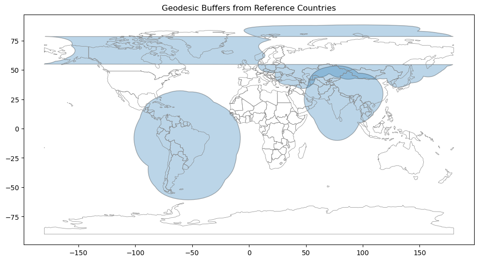
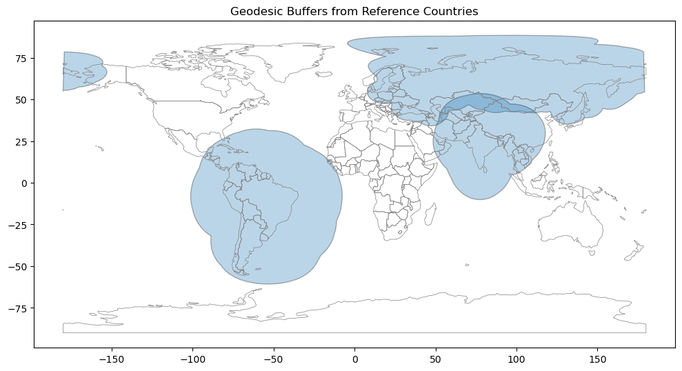

In the Beaver Works Summer Institute course in Remote Sensing Disaster Response, which I’ve taught for the last two years, we do a lot of GIS work. One exercise I thought might be fun for the students was writing some code to cheat at Globle. Globle is a game where you try to guess a secret country. Every time you make a guess, Globle tells you how far the secret country is from your guessed country. Distances are computed as the nearest border-to-border distance (the distance between Canada and the US is 0).
Intuitively, this should be easy! We mostly use geopandas, and geopandas’ geometries are all shapely objects. Shapely objects have a .buffer method that adds a buffer of a specified size, so you should be able to just:
- Make a guess
- Take the guessed country border polygons
- Buffer them
- Look at where they intersect with other countries’ borders (or with other buffered borders)
Sadly, nothing is ever easy. Shapely is a planar geometry package. If you buffer a shapely polygon in geopandas, geopandas will do its best to respect the fact that the Earth is not flat by wrapping any sections that pass though the antimeridian around the edges of the map. Unfortunately, this has the side effect of usually ruining shapely’s expectation that a polygon is defined by the coordinates of its perimeter in counterclockwise order. Visually, this can look like an inversion between the inside and outside of the polygon:

Note: this is purely an example of buffering country borders, not a real Globle problem.
So I wrote this geodesic buffer code to correctly detect when points in a polygon got wrapped around the antimeridian and handle it by splitting the wrapped polygon into a MultiPolygon:
import geopandas as gpd
from shapely.geometry import Point, LinearRing
from shapely.geometry import LinearRing, Polygon, MultiPolygon
def split_polygon_on_antimeridian(coords):
# ensure closure
pts = list(coords)
if pts[0] != pts[-1]:
pts.append(pts[0])
# split into raw rings at each discontinuity
rings = []
current = [pts[0]]
for prev, curr in zip(pts[:-1], pts[1:]):
if abs(curr[0] - prev[0]) > 180:
rings.append(current)
current = [curr]
else:
current.append(curr)
rings.append(current)
# every other ring is part of the main polygon, merge them
if len(rings) >= 3:
start = []
for i in range(0, len(rings), 2):
start.extend(rings[i])
rings = rings[1::2] + [start]
# build polygons, ensuring each ring is closed and ccw
parts = []
for ring in rings:
if ring[0] != ring[-1]:
ring.append(ring[0])
lr = LinearRing(ring)
poly = Polygon(lr) if lr.is_ccw else Polygon(lr.coords[::-1])
parts.append(poly)
if not parts:
return Polygon(pts)
return MultiPolygon(parts) if len(parts) > 1 else parts[0]
def make_geodesic_buffer(geometry, radius_km):
centroid = geometry.centroid
lon, lat = centroid.x, centroid.y
# Define an azimuthal projection centered on this country
aeqd_proj = CRS.from_proj4(f"+proj=aeqd +lat_0={lat} +lon_0={lon} +datum=WGS84 +units=m +no_defs")
# country_proj = gpd.GeoSeries(geometries, crs="EPSG:4326")
country_proj = gpd.GeoDataFrame(dict(geometry=[geometry]), crs="EPSG:4326").to_crs(aeqd_proj)
buffered = country_proj.buffer(radius_km * 1000) # meters
# Reproject back to WGS84
buffered_wgs84 = gpd.GeoSeries(buffered, crs=aeqd_proj).to_crs("EPSG:4326")
all_buffered = []
for buf_g in buffered_wgs84:
coords = list(buf_g.exterior.coords)
split_buffered = split_polygon_on_antimeridian(coords)
all_buffered.append(split_buffered)
return gpd.GeoSeries(all_buffered, crs="EPSG:4326") #buffered_wgs84
Now the buffered polygons display properly!!
